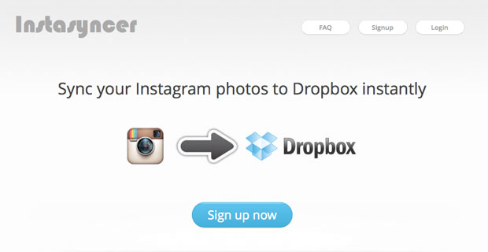
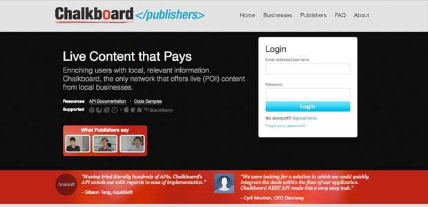

Laurence Putra Franslay
Senior Engineer
Full version available at cv.geeksphere.net

GeekcampSG
Helped organised GeekcampSG 2011, 2012 and 2013, bringing geeks out from all over the world on a Saturday for a day of intellectual sharing.

Instasyncer
Sync your Instagram photos to Dropbox instantly
Chalkboard Webwidget
Displayed Promotions near a user when they browse a page with the Webwidget on it. Done with Javascript and HTML5.

Chalkboard Publisher Platform
Platform for Publishers and Developers manage their use of Chalkboard Webwidgets, as well as the API.
Hack&Roll '12
On the organising team of Hack&Roll '12, bringing geeks from all over NUS to come together for 24 hours of coding and building stuff.
Work History
Nugit Ptd Ltd
- LinkSenior Engineer : April 2016 - October 2016
- Lead the infrastructure team
- Planned and executed migration on legacy databases
- Introduced Salt Stack to manage configurations and app deployment
- Optimised queries through data structure changes, increasing performance by >10x
- Set up monitoring systems and improved transparency on system health
PayPal Pte Ltd
- LinkNon-team specific work
- Core team of internal automation framework
- Maintains internal Gem proxy for PayPal
- Built and maintain bug dashboard to automate bug reporting and increase visibility, resulting in faster turnaround time for bugs
Developer Outreach - Team Lead : Jan 2015 - March 2016
- Worked on increasing PayPal's visibility in the local tech community
- Lead the team to host around 2 meetups per week throughout the year
- Reached out to over 3000 technologists through 50+ meetups in 2015
Consumer Engineering - Software Engineer : March 2015 - March 2016
- Worked on PayPal's iOS and Android applications, delivering features for both
- Facilitated and set up hardware infrastructure for live testing of products built by the team
Regional Solutions Engineering - Software Engineer : March 2014 - Feb 2015
- Delivered features on PayPal for LatAm
- Rolled out support for new credit cards in LatAm
BillPin Pte Ltd
- LinkEngineer : May 2013 - Feb 2014
- Migrated the Billmonk database of size 50GB over to BillPin servers after acquisition of Billmonk
- Rewrote architecture of BillPin’s backend to reduce load on users’ devices
- Migrated existing data to support new currencies feature
- Used hazard tables to allow for distributed calculations of user balances to handle surge in load in the first week
- Identified key metrics and built internal dashboard tools using d3.js to better visualise them
- Managed all servers using Salt Stack to streamline sysadmin/devops tasks
- Optimised load times of Homie.co more than 20x using a variety of techniques, including indexing, and ordering of queries
- Wrote scrapers to crawl and analysis competitors’ data
Newton Circus Pte Ltd
- LinkEngineer (Intern): May 2012 - Aug 2012
- Wrote abstraction layers to convert SOAP API’s provided by transport companies and the government to a RESTful API for participants of UPSingapore
- Abstraction layers also provided rate limiting to prevent overloading of the third party api’s provided
- Created a Kickstarter clone app for local startup Ideasian
- Used PHP/Codeigniter + MongoDB to build the app
- Provided hosting services for the startup after the project ended, with scheduled backups, as well as automatic fallover using HAProxy and MongoDB
Chalkboard Pte Ltd
- LinkEngineer (Contracted Consultant): Aug 2011 - March 2012
Engineer (Intern): May 2011 - Aug 2011
- Joined Chalkboard as a fellow in the StartupRootsSG programme
- Migrated Chalkboard from SVN to git
- Completed the Chalk Webwidget, with white label verions for large clients, and documented it on Github
- Created a Publishers platform for publishers using the Webwidget to view their statistics
- Scaled up the Webwidget at both database and code level to support high loads from various websites hosting the widget, supporting up to 20 requests per second at peak periods
- Created an in house iplocator solution to convert IP addresses to lat/lng points
- Coded mobile apps for Chalkboard, optimising it for the weaker phones
National University of Singapore
- LinkUndergraduate Discussion Group Leader CS1010 - Site: Aug 2011 - Nov 2011
- Imparted knowledge of C and programming methodologies to the students
- Core module for Computer Science majors
Undergraduate Discussion Group Leader CS1101S - Site: Aug 2010 - Nov 2010
- Taught Scheme, a dialect of Lisp to the students
- Involved in building the JFDI system used by the students, a learning tool designed to gamify education.
- Core module for Computer Science majors
Hulutech
- LinkEngineer: Jan 2011 - April 2011
- On the team redesigning the 65Daigou site
- Provided support and experience to the team with regards to the LAMP stack on AWS
- Created a backend book ordering system for MPMmath
Computing for Voluntary Welfare Organisations
- LinkEngineer: May 2010 - May 2011
- On the team that implemented the MINDS eClient system
- Designed and created the Client management section on Drupal 6
- Maintained the code server, with specific focus on security, using software such as DenyHosts
Side Projects
I Am Talented
- LinkCore Team Member: Nov 2014 - Current
- Run programmes together with CDC's around Singapore
- Targeted at Youth-At-Risk
- Purpose is to ignite the spark in them, and give them confidence and purpose
Python User Group Singapore
- LinkSecretary: Oct 2015 - Oct 2017
Committee Member: Oct 2013 - Oct 2015
PyConSG Subcommittee: Jan 2013 - Dec 2013
- Primarily in charge of sponsorships
GeekcampSG
- LinkOrganiser: July 2011 - Nov 2014
- Organised GeekcampSG, one of the largest Geek conferences in Singapore
- Primarily in charge of sponsorships and marketing
- Grew the community to 1,500 geeks in 2013, from 200 in 2011, with 500 of them being students
Singapore MongoDB User Group
- LinkOrganiser: Feb 2012 - June 2015
- Started the MongoDB user group in Singapore
- Grew the community to over 150 members in a period of 6 months
Instasyncer
- LinkCreator: May 2012 - Present
- Helps users sync their Instagram photos to Dropbox instantly
- Stack used: PHP/Codeigniter and MongoDB
- High availability backend with automated daily database backups
- Wrote it primarily to solve a personal pain point
StartupRootsSG
- LinkOrganiser: Jan 2012 - July 2012
- Linked the top startups in Singapore to the top students
- Interviewed (technical) students
- Exposed the fellows to the local tech startup community throughout the fellowship
Education
National University of Singapore
- Link- Bachelor of Computing in Computer Science: Aug 2009 - May 2013
- Focus in Distributed Systems and Security
- Notable modules taken include CS5223 (Distrbuted Systems offered at the Masters level), and CS3216/CS3217 (Software Engineering on Evolving Platforms)
- NUSHackers (Link): Aug 2010 - Sept 2012
- Coreteam member
- Organised Hack Workshop Series, a series of workshops educate students about technologies
- Organised Friday Hacks, a weekly meetup to for hackers to mingle
- Organised Hack&Roll, a 24-hour hackathon, in NUS
- Found sponsors for the events
- Computing for Voluntary Welfare Organisations (Link): Aug 2009 - May 2011
- Held workshops teaching the new applicants about PHP, as well as the LAMP stack
- Created and graded the PHP assignments